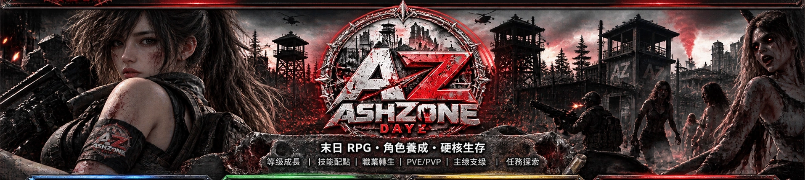

ASHZONE ／ OFFICIAL DAYZ SURVIVAL
SCROLL TO EXPLORE↓
ASHZONE ／ VIDEO TRANSMISSION
灰燼地帶 · 世界影像
保留原官網影片，並改為獨立的電影式展示區塊。
01 / OFFICIAL DISPATCH
所有公告 ↗灰燼情報 · 最新公告
04 / SURVIVOR NETWORK
倖存者集結
加入 ASHZONE 官方社群，查看公告、交流心得與提交問題。

保留原官網影片，並改為獨立的電影式展示區塊。
加入 ASHZONE 官方社群，查看公告、交流心得與提交問題。